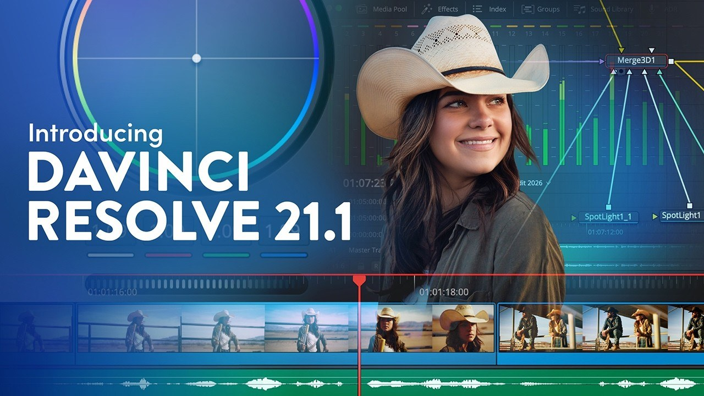

Resolve 21.1：自然語言自動化、HDR 調色與 Fusion 動態圖形
DaVinci Resolve 21.1 帶來超過 100 項更新，其中 MCP Server 可讓外部 AI 以自然語言操作剪輯與專案工作；同時強化 HDR 調色流程，並加入 25 個 Krokodove 工具供 Fusion 動態圖形與標題製作。

製作案例 ★★★☆☆
完整分析
技術／流程變更
MCP 對後期流程的價值不只在聊天控制，而是把整理 media、修改 project settings、建立 highlight reel 等重複操作變成可由外部 agent 呼叫的命令；HDR 與 Fusion 更新則仍屬傳統 artist-facing 能力。
Production 影響
對剪輯／VFX 團隊，可先選低風險任務做 MCP benchmark，例如素材整理、標記或專案設定，記錄自然語言指令的成功率與可回復性，再決定是否碰時間線與內容修改。
導入測試與限制
AI 控制介面增加了權限與誤操作面；即使工具支援自然語言，也不應跳過 project backup、版本控管與人工 review。Studio／免費版功能差異也要依實際部署版本確認。
BRIEF｜來源已驗證；證據深度較有限，完整分析會明確區分已知資訊與待驗證事項。